Концепция
Редизайн сайта Уральского федерального университета: новый знак, новая структура, главная и ещё 14 страниц разных типов — всё в виде живого интерактивного прототипа.
Идея
Знак УрФУ — буква «У»: тонкий штрих и толстая ножка. Это буквально история вуза: в 1920 году был один университет, потом из него выросли политех и классический университет, а в 2011 году они снова стали одним. Две линии, ставшие одной. На этой букве построено всё: знак, навигация, главная фишка сайта и даже голос заголовков — «У тебя получится», «У нас бюджетных мест».
Что мешает сейчас
- 3параллельных меню: 8 вкладок по аудиториям, 14 тем и «Все разделы» примерно на 200 ссылок
- 18блоков на главной; «Пилотный проект» повторяется трижды, поступление — только в четвёртом
- 419ссылок на странице «Абитуриентам», три заголовка первого уровня на одной странице
- 86 из 105картинок на этой странице без альтернативного текста для незрячих
Новая структура
Навигация по задачам, а не по оргструктуре: пять разделов вместо трёх меню. У каждого раздела свой цвет — по шапке страницы видно, где ты. Обязательные по закону разделы ушли в подвал, где их и ищут.
- ПоступитьПодбор программы по ЕГЭ · Каталог программ · Бакалавриат и специалитет · Сроки приёма 2026 · Магистратура
- УчитьсяРасписание · Где аудитория · Личный кабинет · Стипендии · Библиотека
- НаукаНаправления исследований · Лаборатории · Студенческая наука · Аспирантура · Гранты и конкурсы
- ЖизньСтуденческая жизнь · Общежития · Карта кампуса · Афиша · Спорт
- УниверситетИстория с 1920 года · Институты · Новости · Фирменный стиль · Концепция редизайна
Что стало удобнее
- Подбор по ЕГЭ
- Отмечаешь предметы — внизу выезжают билеты направлений, куда с ними берут. 112 направлений, минимумы и цена из калькулятора УрФУ.
- Каталог программ
- Все направления сгруппированы по укрупнённым группам, фильтры по ЕГЭ, уровню и цене, ссылки сохраняют выбор.
- Календарь приёма
- Лето 2026 года сеткой: бюджет и платное — переключателем, каждый срок — в списке рядом.
- Чек-лист абитуриента
- Семь шагов, отметки сохраняются в браузере.
- Где аудитория
- Вводишь «Р-237» — сайт отвечает: корпус радиофака, Мира, 32, второй этаж, показывает фотографию корпуса и находит его на плане Втузгородка. Каждый корпус окрашен в свой уральский самоцвет, переходы между корпусами отмечены.
- Расписание
- Что сейчас и что дальше, аудитория со ссылкой на карту, линия текущего времени, экспорт недели в календарь телефона.
- Один поиск
- Клавиша «/» или Ctrl+K: страницы, программы, институты и коды аудиторий в одном поле.
- Доступность
- Крупный текст и контраст — переключатель в подвале, а не отдельный сайт; контраст не ниже AA, анимации отключаются системной настройкой, сайт работает без JavaScript.
Визуальный язык
Уральский конструктивизм. Университет основан в 1920 году — в тот же год родился конструктивизм, а Екатеринбург стал его столицей. Отсюда плоские поля цвета, тяжёлые заголовки Unbounded, чёрно-белые фото, вырезанные и наклеенные под углом, и строгая сетка под этим шумом.
Палитра «самоцветы и чугун». Красный знака УрФУ, изумруд — в честь олимпиады «Изумруд» и уральского камня, жёлтый кнопок нынешнего сайта, чёрный логотипа и тёплая бумага вместо белого. Без градиентов, теней и полупрозрачного стекла.
Текст — Onest. Свободный шрифт с кириллицей, 17–22 пикселя, чтобы читалось с телефона.
Страницы прототипа
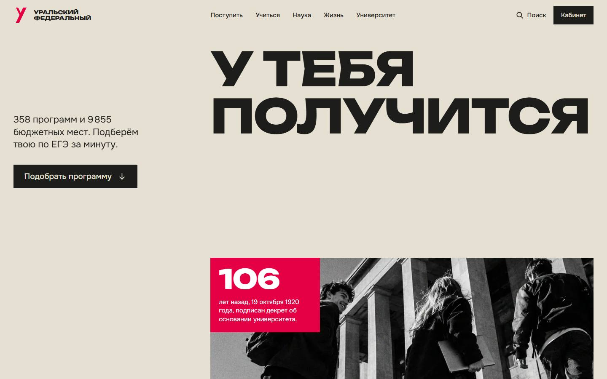
Главнаяподбор по ЕГЭ, институты, жизнь, как поступить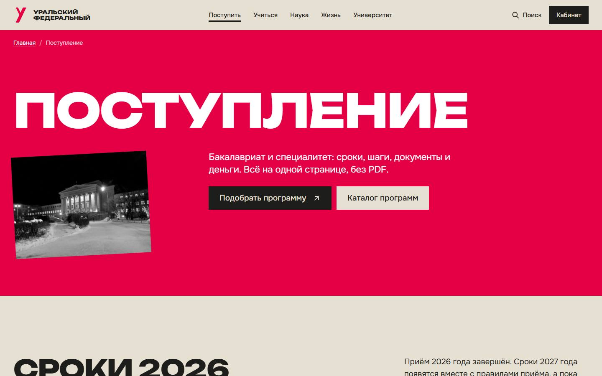
Поступлениесроки 2026, шаги, документы, вопросы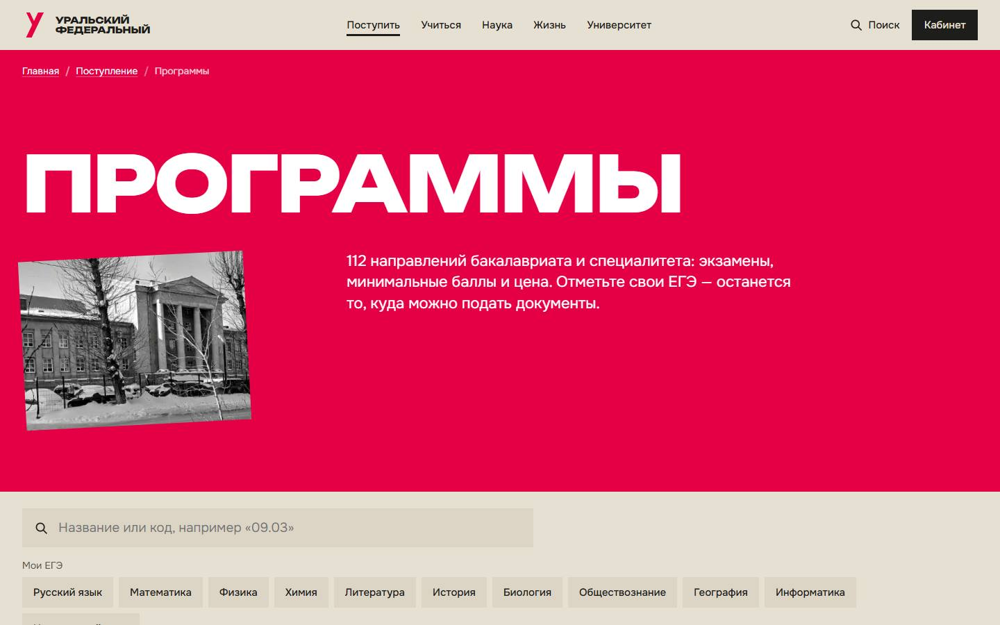
Каталог программфильтры по ЕГЭ и стоимости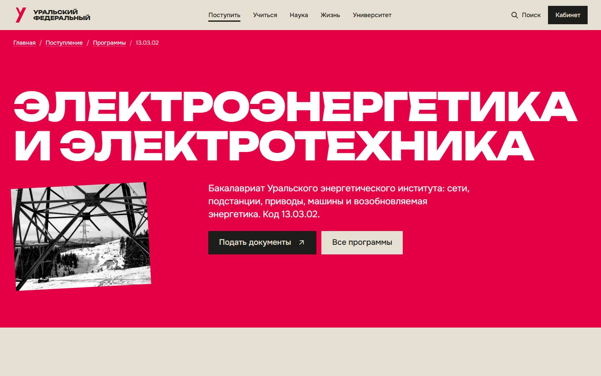
ПрограммаЭлектроэнергетика и электротехника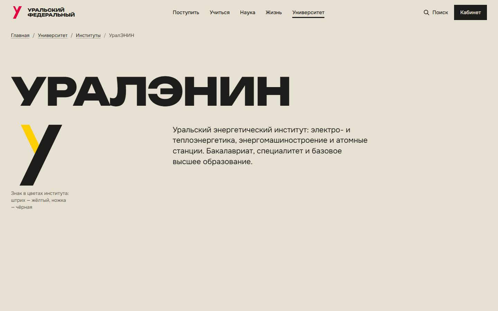
ИнститутУральский энергетический институт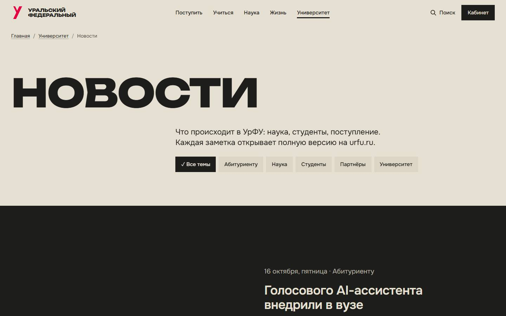
Новостилента с превью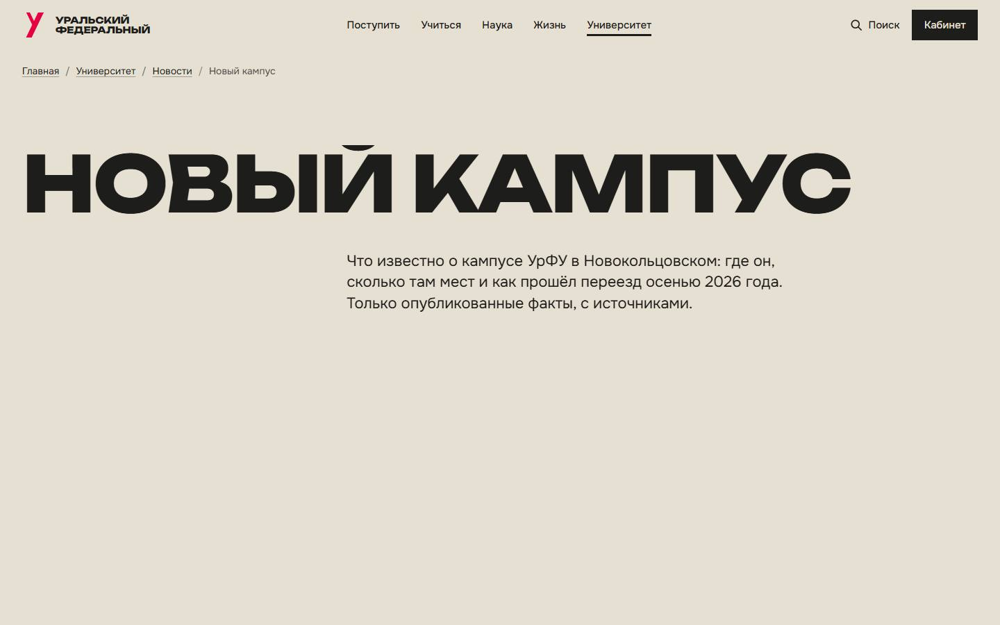
Статьялонгрид о новом кампусе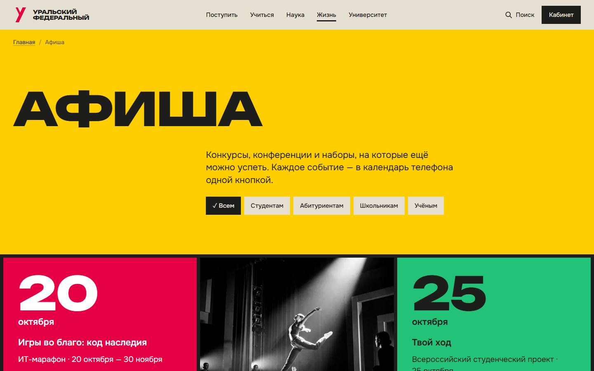
Афишакалендарь событий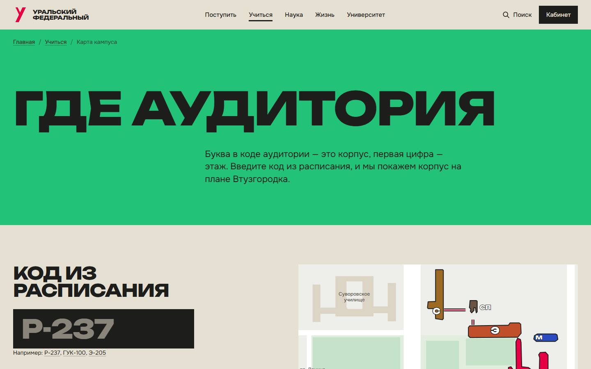
Карта кампусагде корпус и аудитория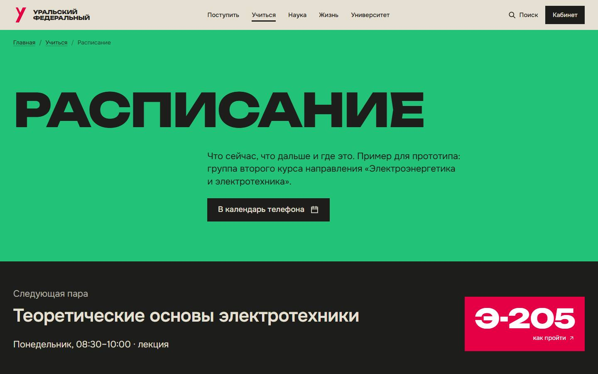
Расписаниенеделя группы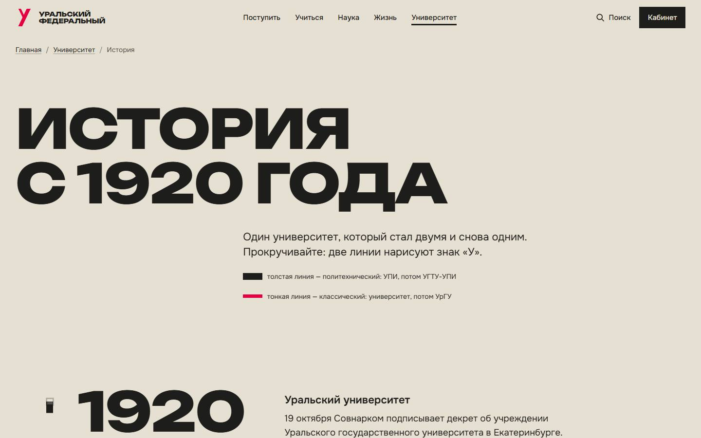
Историяс 1920 года до слияния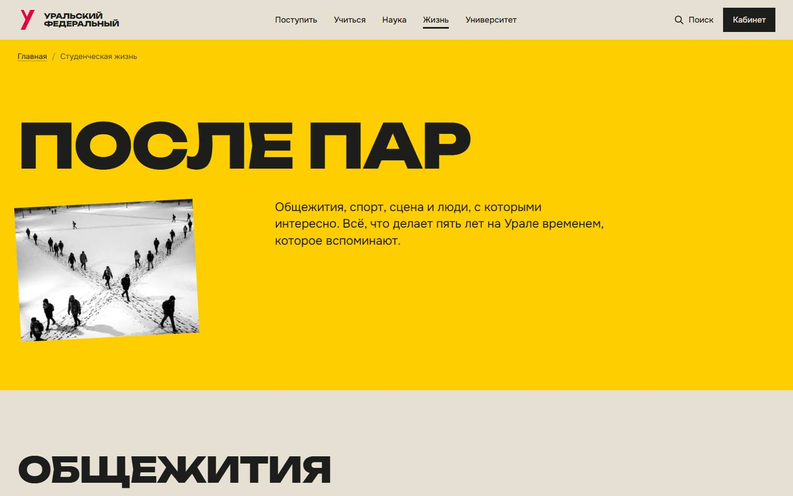
Жизньобщежития, спорт, творчество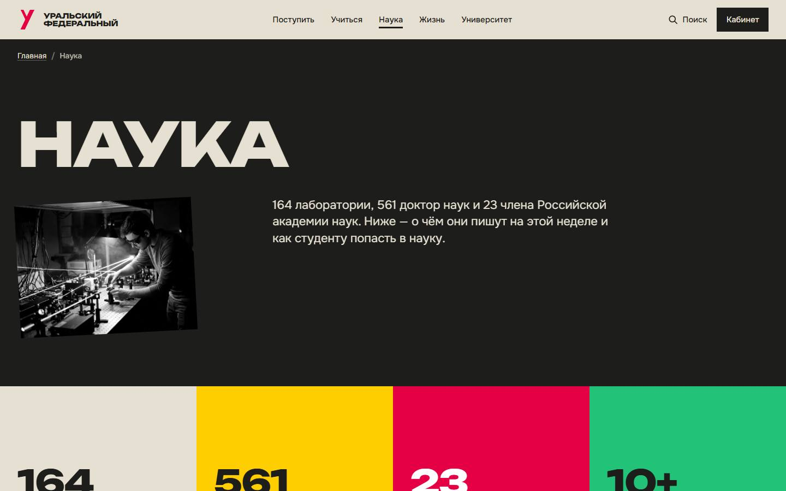
Наукалаборатории и студенческая наука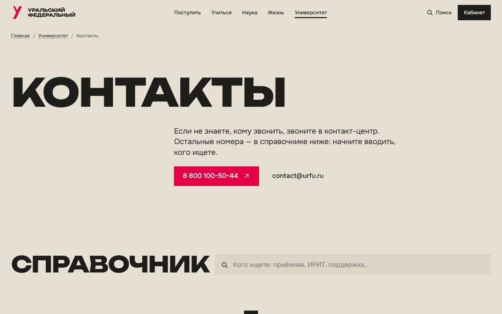
Контактыслужбы и как добраться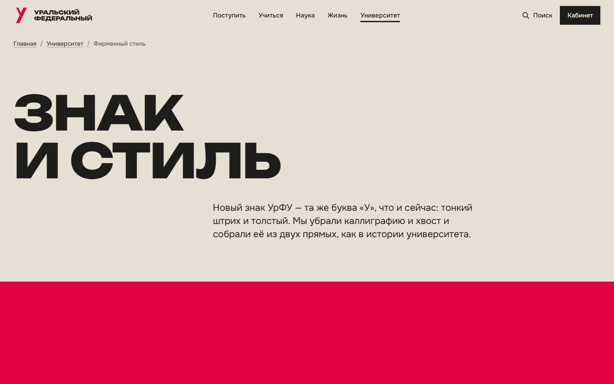
Фирменный стильновый знак и правила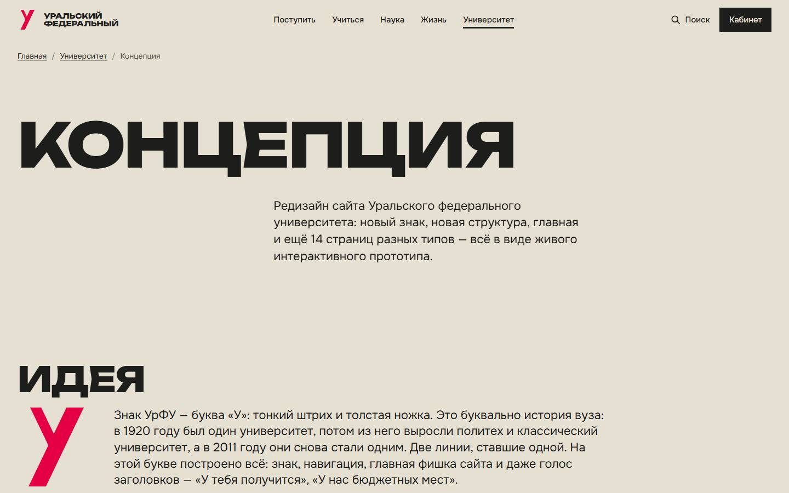
Концепцияописание для жюри
Как сделано и что дальше
Прототип — настоящий сайт на HTML, CSS и JavaScript с анимациями GSAP, без фреймворков: открывается даже с флешки, без интернета. Кроме страниц, свёрстанных вручную, он собирает из данных страницы всех 112 направлений каталога, 13 институтов и 20 разделов новой структуры, так что работает каждая кнопка меню. Данные реальные: калькулятор ЕГЭ, календарь приёма 2026 года, новости и афиша УрФУ, цифры из раздела «Об УрФУ в цифрах».
Что заменить перед запуском: иллюстрации и видео, сгенерированные нейросетью, — на фотосъёмку студентов (там, где картинка изображает реальное место, она подписана «Иллюстрация»); пример расписания — на данные системы расписания; план Втузгородка снят со схемы корпусов — сверить с картой университета. Фотографии зданий — Wikimedia Commons, авторы указаны в подвале каждой страницы.